Fitting synthetic data using epidp
fitting_synthetic_data_using_epidp.Rmd
library(epidp)
library(ggplot2)
library(dplyr)
#>
#> Attaching package: 'dplyr'
#> The following objects are masked from 'package:stats':
#>
#> filter, lag
#> The following objects are masked from 'package:base':
#>
#> intersect, setdiff, setequal, union
library(magrittr)
library(purrr)
#>
#> Attaching package: 'purrr'
#> The following object is masked from 'package:magrittr':
#>
#> set_names
library(tidyr)
#>
#> Attaching package: 'tidyr'
#> The following object is masked from 'package:magrittr':
#>
#> extractIn this vignette, we show how epidp can be used to
generate then fit to synthetically generated infection data. Throughout,
we assume a generating process of the form:
where .
Step function in
We first generate case data assuming a step function for .
rt_fun <- function(t) {
if (t <= 60) {
R <- 2
} else if (t <= 90) {
R <- 0.5
} else {
R <- 1
}
R
}
# simulation parameters
nt <- 200
mean_si <- 6.5
sd_si <- 4.03
i_0 <- 10
# data frame of outputs
epidemic_df <- simulate_renewal_epidemic(rt_fun, nt, mean_si, sd_si, i_0)
# plot
transform_factor <- 300
epidemic_df %>%
select(-c(w_dist, lambda_t)) %>%
mutate(R_t = R_t * transform_factor) %>%
pivot_longer(c(i_t, R_t)) %>%
ggplot(aes(x = t, y = value, colour = name)) +
geom_line() +
scale_y_continuous(
name = "Incidence (i_t)",
sec.axis = sec_axis(~ . / transform_factor, name = "Reproduction Number (R_t)")
) +
labs(x = "Time") +
theme_minimal() +
scale_color_brewer("Series", palette = "Dark2")We now use a Stan version of EpiFilter to estimate the maximum a posteriori estimates of and overlay these on top of the actual values. Note, these estimates do not have uncertainty associated with them but the benefit of this is that estimation is instantaneous. The estimates are close to the actual values after an initial period when case counts are low.
# fit model
fit <- fit_epifilter(
N = length(epidemic_df$i_t),
C = epidemic_df$i_t,
w = epidemic_df$w_dist,
is_sampling = FALSE,
as_vector = FALSE
)
# plot
R <- fit$par$R
epidemic_df %>%
mutate(estimated = R) %>%
rename(true = R_t) %>%
select(t, estimated, true) %>%
pivot_longer(c(estimated, true)) %>%
ggplot(aes(x = t, y = value)) +
geom_line(aes(colour = name)) +
scale_color_brewer("R_t", palette = "Dark2") +
ylab("R_t")
Sinusoidal function in
We now generate case data assuming a sinusoidal .
# define sinusoidal Rt
rt_fun <- function(t) {
1.3 + 1.2 * sin(4 * (pi / 180) * t)
}
nt <- 200
mean_si <- 6.5
sd_si <- 4.03
i_0 <- 10
# data frame of outputs
epidemic_df <- simulate_renewal_epidemic(rt_fun, nt, mean_si, sd_si, i_0)
# plot
transform_factor <- 150
epidemic_df %>%
select(-c(w_dist, lambda_t)) %>%
mutate(R_t = R_t * transform_factor) %>%
pivot_longer(c(i_t, R_t)) %>%
ggplot(aes(x = t, y = value, colour = name)) +
geom_line() +
scale_y_continuous(
name = "Incidence (i_t)",
sec.axis = sec_axis(~ . / transform_factor, name = "Reproduction Number (R_t)")
) +
labs(x = "Time") +
theme_minimal() +
scale_color_brewer("Series", palette = "Dark2")
We now use a Stan version of EpiFilter to estimate the profile.
# fit model
fit <- fit_epifilter(
N = length(epidemic_df$i_t),
C = epidemic_df$i_t,
w = epidemic_df$w_dist,
iter = 200,
chains = 1 # to pass CRAN
)
#>
#> SAMPLING FOR MODEL 'epifilter' NOW (CHAIN 1).
#> Chain 1:
#> Chain 1: Gradient evaluation took 0.001416 seconds
#> Chain 1: 1000 transitions using 10 leapfrog steps per transition would take 14.16 seconds.
#> Chain 1: Adjust your expectations accordingly!
#> Chain 1:
#> Chain 1:
#> Chain 1: WARNING: There aren't enough warmup iterations to fit the
#> Chain 1: three stages of adaptation as currently configured.
#> Chain 1: Reducing each adaptation stage to 15%/75%/10% of
#> Chain 1: the given number of warmup iterations:
#> Chain 1: init_buffer = 15
#> Chain 1: adapt_window = 75
#> Chain 1: term_buffer = 10
#> Chain 1:
#> Chain 1: Iteration: 1 / 200 [ 0%] (Warmup)
#> Chain 1: Iteration: 20 / 200 [ 10%] (Warmup)
#> Chain 1: Iteration: 40 / 200 [ 20%] (Warmup)
#> Chain 1: Iteration: 60 / 200 [ 30%] (Warmup)
#> Chain 1: Iteration: 80 / 200 [ 40%] (Warmup)
#> Chain 1: Iteration: 100 / 200 [ 50%] (Warmup)
#> Chain 1: Iteration: 101 / 200 [ 50%] (Sampling)
#> Chain 1: Iteration: 120 / 200 [ 60%] (Sampling)
#> Chain 1: Iteration: 140 / 200 [ 70%] (Sampling)
#> Chain 1: Iteration: 160 / 200 [ 80%] (Sampling)
#> Chain 1: Iteration: 180 / 200 [ 90%] (Sampling)
#> Chain 1: Iteration: 200 / 200 [100%] (Sampling)
#> Chain 1:
#> Chain 1: Elapsed Time: 10.613 seconds (Warm-up)
#> Chain 1: 10.894 seconds (Sampling)
#> Chain 1: 21.507 seconds (Total)
#> Chain 1:
#> Warning in validityMethod(object): The following variables have undefined
#> values: log_likelihood[1]. Many subsequent functions will not work correctly.
#> Warning: The largest R-hat is NA, indicating chains have not mixed.
#> Running the chains for more iterations may help. See
#> https://mc-stan.org/misc/warnings.html#r-hat
#> Warning: Bulk Effective Samples Size (ESS) is too low, indicating posterior means and medians may be unreliable.
#> Running the chains for more iterations may help. See
#> https://mc-stan.org/misc/warnings.html#bulk-ess
#> Warning: Tail Effective Samples Size (ESS) is too low, indicating posterior variances and tail quantiles may be unreliable.
#> Running the chains for more iterations may help. See
#> https://mc-stan.org/misc/warnings.html#tail-ess
# look at MCMC summaries
print(fit, c("sigma", "R"))
#> Inference for Stan model: epifilter.
#> 1 chains, each with iter=200; warmup=100; thin=1;
#> post-warmup draws per chain=100, total post-warmup draws=100.
#>
#> mean se_mean sd 2.5% 25% 50% 75% 97.5% n_eff Rhat
#> sigma 0.14 0.00 0.01 0.12 0.13 0.14 0.14 0.16 32 0.99
#> R[1] 1.58 0.05 0.46 0.70 1.31 1.55 1.82 2.51 76 0.99
#> R[2] 1.57 0.05 0.40 0.83 1.28 1.54 1.82 2.50 69 0.99
#> R[3] 1.58 0.05 0.38 0.83 1.35 1.56 1.77 2.45 61 0.99
#> R[4] 1.54 0.05 0.34 0.90 1.31 1.51 1.73 2.20 55 0.99
#> R[5] 1.53 0.04 0.33 0.90 1.32 1.50 1.76 2.15 56 0.99
#> R[6] 1.60 0.04 0.33 1.02 1.37 1.60 1.85 2.22 56 1.00
#> R[7] 1.67 0.04 0.33 1.05 1.41 1.65 1.89 2.34 63 0.99
#> R[8] 1.71 0.04 0.36 1.02 1.42 1.73 1.96 2.46 90 1.00
#> R[9] 1.77 0.04 0.36 1.16 1.51 1.75 2.05 2.55 106 0.99
#> R[10] 1.86 0.03 0.33 1.27 1.64 1.85 2.07 2.48 120 0.99
#> R[11] 1.91 0.03 0.34 1.34 1.62 1.92 2.09 2.62 103 0.99
#> R[12] 1.93 0.03 0.32 1.39 1.72 1.88 2.13 2.51 114 0.99
#> R[13] 1.97 0.03 0.29 1.51 1.75 1.95 2.13 2.55 131 0.99
#> R[14] 2.03 0.02 0.30 1.52 1.82 2.02 2.23 2.60 172 0.99
#> R[15] 2.07 0.02 0.31 1.42 1.91 2.04 2.29 2.63 168 1.00
#> R[16] 2.11 0.03 0.31 1.49 1.92 2.08 2.31 2.76 111 0.99
#> R[17] 2.16 0.03 0.29 1.56 1.98 2.14 2.34 2.77 89 1.00
#> R[18] 2.25 0.03 0.28 1.71 2.08 2.22 2.42 2.76 104 0.99
#> R[19] 2.33 0.02 0.27 1.87 2.16 2.29 2.52 2.85 160 1.00
#> R[20] 2.40 0.02 0.26 1.94 2.24 2.40 2.55 2.84 113 1.00
#> R[21] 2.49 0.03 0.25 2.04 2.31 2.49 2.64 3.02 92 0.99
#> R[22] 2.61 0.02 0.26 2.15 2.42 2.59 2.80 3.11 148 1.00
#> R[23] 2.63 0.03 0.27 2.21 2.40 2.62 2.86 3.09 103 1.00
#> R[24] 2.63 0.02 0.27 2.09 2.45 2.61 2.76 3.20 123 1.00
#> R[25] 2.55 0.02 0.25 2.06 2.38 2.55 2.70 3.07 109 1.03
#> R[26] 2.53 0.02 0.21 2.15 2.36 2.53 2.68 2.96 96 1.02
#> R[27] 2.61 0.02 0.20 2.22 2.45 2.61 2.74 2.94 103 0.99
#> R[28] 2.44 0.02 0.19 2.09 2.31 2.44 2.57 2.83 114 0.99
#> R[29] 2.28 0.02 0.20 1.93 2.16 2.27 2.41 2.61 107 0.99
#> R[30] 2.20 0.02 0.17 1.88 2.08 2.21 2.30 2.55 92 1.03
#> R[31] 2.19 0.02 0.17 1.91 2.08 2.19 2.29 2.52 110 0.99
#> R[32] 2.13 0.01 0.17 1.85 2.02 2.13 2.23 2.50 129 0.99
#> R[33] 2.20 0.01 0.17 1.92 2.09 2.19 2.29 2.61 136 0.99
#> R[34] 2.10 0.02 0.15 1.82 1.98 2.09 2.23 2.35 88 0.99
#> R[35] 1.92 0.01 0.15 1.64 1.83 1.92 2.03 2.21 111 0.99
#> R[36] 1.87 0.02 0.14 1.61 1.76 1.85 1.96 2.13 84 1.00
#> R[37] 1.82 0.01 0.14 1.56 1.74 1.81 1.92 2.09 103 1.02
#> R[38] 1.84 0.01 0.12 1.65 1.76 1.83 1.95 2.04 93 1.00
#> R[39] 1.75 0.01 0.12 1.56 1.67 1.75 1.84 2.00 80 0.99
#> R[40] 1.59 0.01 0.09 1.44 1.51 1.58 1.65 1.78 118 0.99
#> R[41] 1.60 0.01 0.10 1.43 1.52 1.61 1.68 1.77 98 1.02
#> R[42] 1.51 0.01 0.10 1.33 1.43 1.49 1.59 1.68 128 0.99
#> R[43] 1.35 0.01 0.10 1.17 1.27 1.33 1.40 1.56 86 0.99
#> R[44] 1.48 0.01 0.10 1.29 1.42 1.48 1.53 1.70 103 0.99
#> R[45] 1.35 0.01 0.09 1.20 1.29 1.35 1.42 1.52 129 0.99
#> R[46] 1.37 0.01 0.10 1.19 1.31 1.37 1.43 1.57 184 0.99
#> R[47] 1.31 0.01 0.08 1.14 1.26 1.30 1.35 1.46 80 0.99
#> R[48] 1.14 0.01 0.08 0.98 1.09 1.14 1.18 1.31 93 0.99
#> R[49] 1.03 0.01 0.08 0.89 0.99 1.02 1.09 1.18 84 0.99
#> R[50] 0.89 0.01 0.07 0.74 0.84 0.88 0.94 1.01 109 0.99
#> R[51] 0.81 0.01 0.06 0.70 0.76 0.80 0.84 0.94 133 0.99
#> R[52] 0.78 0.01 0.06 0.65 0.74 0.78 0.82 0.88 94 1.00
#> R[53] 0.61 0.01 0.06 0.52 0.58 0.61 0.64 0.72 48 0.99
#> R[54] 0.60 0.00 0.06 0.49 0.56 0.61 0.64 0.71 151 1.02
#> R[55] 0.56 0.01 0.05 0.46 0.53 0.57 0.60 0.66 68 1.02
#> R[56] 0.46 0.01 0.05 0.36 0.43 0.45 0.49 0.55 91 1.00
#> R[57] 0.41 0.00 0.04 0.33 0.38 0.41 0.44 0.49 113 0.99
#> R[58] 0.34 0.00 0.04 0.27 0.31 0.34 0.37 0.41 103 1.00
#> R[59] 0.24 0.00 0.04 0.16 0.21 0.24 0.26 0.31 152 0.99
#> R[60] 0.22 0.00 0.03 0.16 0.19 0.22 0.23 0.29 176 1.01
#> R[61] 0.18 0.00 0.03 0.12 0.16 0.18 0.20 0.25 122 0.99
#> R[62] 0.18 0.00 0.04 0.12 0.15 0.17 0.20 0.24 126 0.99
#> R[63] 0.17 0.00 0.04 0.11 0.14 0.17 0.19 0.25 144 0.99
#> R[64] 0.12 0.00 0.03 0.07 0.10 0.12 0.14 0.20 109 0.99
#> R[65] 0.12 0.00 0.04 0.07 0.09 0.12 0.15 0.20 167 1.01
#> R[66] 0.09 0.00 0.03 0.04 0.07 0.09 0.12 0.15 83 1.05
#> R[67] 0.10 0.00 0.04 0.03 0.07 0.08 0.12 0.18 98 1.01
#> R[68] 0.13 0.00 0.05 0.05 0.09 0.12 0.15 0.23 100 1.03
#> R[69] 0.15 0.01 0.06 0.06 0.11 0.14 0.17 0.29 119 0.99
#> R[70] 0.17 0.01 0.06 0.07 0.12 0.15 0.20 0.31 84 0.99
#> R[71] 0.19 0.01 0.07 0.10 0.14 0.19 0.24 0.32 77 0.99
#> R[72] 0.24 0.01 0.08 0.11 0.18 0.23 0.31 0.42 82 0.99
#> R[73] 0.26 0.01 0.08 0.10 0.20 0.25 0.31 0.42 70 0.99
#> R[74] 0.28 0.01 0.10 0.10 0.21 0.28 0.35 0.50 55 0.99
#> R[75] 0.32 0.01 0.12 0.12 0.24 0.30 0.39 0.56 69 0.99
#> R[76] 0.36 0.01 0.12 0.18 0.28 0.34 0.43 0.62 72 0.99
#> R[77] 0.46 0.02 0.14 0.24 0.38 0.44 0.54 0.80 64 0.99
#> R[78] 0.54 0.02 0.17 0.31 0.45 0.50 0.63 0.96 78 0.99
#> R[79] 0.61 0.02 0.16 0.35 0.49 0.59 0.70 0.97 83 0.99
#> R[80] 0.66 0.02 0.18 0.38 0.55 0.65 0.75 1.10 69 0.99
#> R[81] 0.74 0.02 0.18 0.39 0.65 0.74 0.83 1.12 85 0.99
#> R[82] 0.84 0.02 0.23 0.44 0.71 0.81 0.95 1.34 84 0.99
#> R[83] 0.96 0.03 0.23 0.53 0.79 0.92 1.12 1.43 67 0.99
#> R[84] 1.02 0.03 0.24 0.57 0.86 1.03 1.19 1.53 75 0.99
#> R[85] 1.13 0.03 0.26 0.61 0.98 1.13 1.27 1.65 80 0.99
#> R[86] 1.22 0.03 0.29 0.67 1.03 1.22 1.40 1.85 79 1.00
#> R[87] 1.33 0.03 0.26 0.77 1.15 1.30 1.51 1.88 82 0.99
#> R[88] 1.41 0.03 0.25 0.91 1.25 1.43 1.58 1.93 71 0.99
#> R[89] 1.44 0.03 0.26 0.94 1.23 1.43 1.63 1.89 91 0.99
#> R[90] 1.49 0.02 0.25 1.06 1.32 1.46 1.68 1.97 103 0.99
#> R[91] 1.50 0.03 0.25 0.98 1.32 1.49 1.67 1.93 76 1.00
#> R[92] 1.49 0.04 0.25 1.07 1.31 1.49 1.62 1.99 48 0.99
#> R[93] 1.52 0.02 0.25 1.09 1.37 1.49 1.69 2.07 105 0.99
#> R[94] 1.55 0.02 0.26 1.13 1.37 1.54 1.70 2.09 141 1.00
#> R[95] 1.62 0.02 0.25 1.18 1.45 1.62 1.75 2.17 122 1.00
#> R[96] 1.68 0.02 0.24 1.27 1.51 1.68 1.82 2.22 130 0.99
#> R[97] 1.79 0.02 0.20 1.43 1.67 1.79 1.93 2.25 121 1.00
#> R[98] 1.86 0.02 0.22 1.48 1.72 1.84 1.98 2.34 131 0.99
#> R[99] 1.92 0.02 0.26 1.48 1.74 1.90 2.11 2.41 187 0.99
#> R[100] 1.96 0.02 0.24 1.49 1.79 1.98 2.11 2.41 153 1.00
#> R[101] 2.04 0.02 0.24 1.63 1.88 2.04 2.19 2.49 200 0.99
#> R[102] 2.13 0.02 0.26 1.66 1.95 2.14 2.30 2.61 159 0.99
#> R[103] 2.19 0.02 0.28 1.69 2.00 2.18 2.37 2.77 168 0.99
#> R[104] 2.27 0.02 0.26 1.84 2.06 2.22 2.46 2.76 118 1.01
#> R[105] 2.22 0.03 0.25 1.73 2.03 2.23 2.41 2.72 84 1.00
#> R[106] 2.20 0.02 0.23 1.75 2.04 2.20 2.41 2.59 102 1.00
#> R[107] 2.25 0.03 0.24 1.82 2.09 2.23 2.40 2.67 83 1.00
#> R[108] 2.40 0.02 0.22 2.02 2.23 2.40 2.57 2.82 113 0.99
#> R[109] 2.56 0.02 0.20 2.19 2.42 2.57 2.69 2.99 103 1.02
#> R[110] 2.57 0.02 0.20 2.27 2.43 2.55 2.70 3.04 99 0.99
#> R[111] 2.62 0.02 0.20 2.16 2.48 2.63 2.73 2.99 111 0.99
#> R[112] 2.41 0.01 0.18 2.08 2.27 2.44 2.52 2.76 161 0.99
#> R[113] 2.43 0.02 0.20 2.03 2.30 2.41 2.55 2.82 114 1.00
#> R[114] 2.52 0.02 0.18 2.24 2.37 2.52 2.68 2.84 100 0.99
#> R[115] 2.54 0.02 0.18 2.18 2.42 2.53 2.69 2.89 112 0.99
#> R[116] 2.52 0.02 0.17 2.21 2.40 2.51 2.64 2.82 125 0.99
#> R[117] 2.33 0.02 0.17 2.04 2.20 2.33 2.43 2.63 112 0.99
#> R[118] 2.43 0.02 0.14 2.15 2.36 2.45 2.52 2.66 88 1.00
#> R[119] 2.47 0.02 0.15 2.21 2.37 2.45 2.56 2.83 90 1.02
#> R[120] 2.33 0.01 0.11 2.11 2.27 2.33 2.39 2.55 101 1.04
#> R[121] 2.20 0.01 0.12 1.98 2.13 2.20 2.30 2.40 72 1.00
#> R[122] 2.21 0.02 0.11 2.02 2.14 2.20 2.28 2.47 45 1.03
#> R[123] 2.12 0.01 0.11 1.93 2.03 2.12 2.19 2.32 93 0.99
#> R[124] 2.08 0.01 0.10 1.91 2.01 2.07 2.14 2.30 67 0.99
#> R[125] 2.01 0.01 0.10 1.83 1.94 2.00 2.08 2.19 112 0.99
#> R[126] 1.90 0.01 0.08 1.76 1.84 1.90 1.96 2.03 76 0.99
#> R[127] 1.94 0.01 0.08 1.82 1.87 1.93 1.98 2.11 79 0.99
#> R[128] 1.88 0.01 0.08 1.71 1.82 1.88 1.94 2.06 72 1.00
#> R[129] 1.79 0.01 0.08 1.65 1.73 1.79 1.85 1.95 86 0.99
#> R[130] 1.75 0.01 0.07 1.59 1.70 1.75 1.80 1.89 86 1.00
#> R[131] 1.69 0.01 0.06 1.57 1.65 1.69 1.74 1.81 99 0.99
#> R[132] 1.49 0.01 0.07 1.39 1.44 1.48 1.53 1.62 101 1.00
#> R[133] 1.45 0.01 0.06 1.34 1.40 1.44 1.49 1.56 82 0.99
#> R[134] 1.32 0.01 0.06 1.21 1.28 1.33 1.37 1.42 108 0.99
#> R[135] 1.36 0.01 0.05 1.26 1.34 1.36 1.39 1.45 34 1.06
#> R[136] 1.30 0.01 0.05 1.19 1.26 1.30 1.35 1.39 81 1.00
#> R[137] 1.12 0.01 0.04 1.04 1.10 1.13 1.15 1.21 66 1.00
#> R[138] 1.02 0.00 0.04 0.95 0.99 1.02 1.05 1.11 80 0.99
#> R[139] 0.93 0.00 0.04 0.86 0.91 0.93 0.96 1.02 94 1.00
#> R[140] 0.87 0.00 0.04 0.80 0.84 0.86 0.89 0.95 77 0.99
#> R[141] 0.85 0.00 0.04 0.77 0.82 0.84 0.87 0.92 70 1.00
#> R[142] 0.80 0.01 0.04 0.72 0.78 0.80 0.82 0.87 59 1.02
#> R[143] 0.67 0.00 0.04 0.61 0.65 0.67 0.70 0.73 124 1.00
#> R[144] 0.62 0.00 0.03 0.55 0.60 0.62 0.64 0.68 180 1.01
#> R[145] 0.48 0.00 0.03 0.43 0.46 0.48 0.50 0.53 153 1.01
#> R[146] 0.42 0.00 0.03 0.37 0.40 0.42 0.44 0.47 97 0.99
#> R[147] 0.40 0.00 0.03 0.36 0.38 0.40 0.41 0.47 91 0.99
#> R[148] 0.37 0.00 0.03 0.31 0.35 0.37 0.39 0.42 82 0.99
#> R[149] 0.31 0.00 0.03 0.27 0.29 0.31 0.34 0.36 114 0.99
#> R[150] 0.25 0.00 0.03 0.20 0.24 0.25 0.27 0.30 99 1.03
#> R[151] 0.20 0.00 0.02 0.16 0.19 0.20 0.22 0.25 110 0.99
#> R[152] 0.21 0.00 0.03 0.17 0.19 0.20 0.22 0.26 117 1.03
#> R[153] 0.16 0.00 0.02 0.13 0.15 0.17 0.18 0.20 90 1.04
#> R[154] 0.13 0.00 0.02 0.10 0.12 0.13 0.15 0.17 146 0.99
#> R[155] 0.12 0.00 0.02 0.09 0.11 0.12 0.13 0.16 111 0.99
#> R[156] 0.08 0.00 0.02 0.05 0.07 0.08 0.10 0.12 119 0.99
#> R[157] 0.09 0.00 0.03 0.04 0.07 0.09 0.11 0.14 176 0.99
#> R[158] 0.11 0.00 0.03 0.06 0.09 0.11 0.12 0.16 121 1.01
#> R[159] 0.11 0.00 0.03 0.06 0.09 0.10 0.12 0.17 167 0.99
#> R[160] 0.10 0.00 0.03 0.05 0.07 0.09 0.12 0.17 115 0.99
#> R[161] 0.12 0.00 0.04 0.05 0.09 0.11 0.14 0.20 110 0.99
#> R[162] 0.12 0.00 0.05 0.04 0.08 0.12 0.15 0.21 119 1.00
#> R[163] 0.16 0.00 0.04 0.08 0.12 0.15 0.18 0.25 140 1.01
#> R[164] 0.16 0.00 0.05 0.08 0.13 0.16 0.19 0.26 98 1.01
#> R[165] 0.20 0.01 0.07 0.09 0.15 0.19 0.24 0.36 82 0.99
#> R[166] 0.22 0.01 0.07 0.10 0.16 0.21 0.26 0.37 106 0.99
#> R[167] 0.27 0.01 0.09 0.13 0.22 0.27 0.32 0.47 120 0.99
#> R[168] 0.33 0.01 0.10 0.18 0.25 0.32 0.38 0.56 88 0.99
#> R[169] 0.43 0.01 0.13 0.22 0.34 0.42 0.51 0.72 85 0.99
#> R[170] 0.48 0.01 0.14 0.23 0.39 0.45 0.55 0.78 91 1.00
#> R[171] 0.55 0.02 0.15 0.31 0.44 0.54 0.63 0.86 53 1.03
#> R[172] 0.64 0.02 0.15 0.33 0.53 0.63 0.73 0.97 45 1.00
#> R[173] 0.75 0.02 0.16 0.51 0.65 0.73 0.85 1.08 70 0.99
#> R[174] 0.89 0.02 0.16 0.59 0.78 0.88 1.01 1.21 91 0.99
#> R[175] 0.97 0.02 0.19 0.63 0.84 0.95 1.07 1.41 107 0.99
#> R[176] 1.05 0.02 0.19 0.72 0.94 1.02 1.17 1.42 128 1.00
#> R[177] 1.13 0.02 0.21 0.74 1.00 1.13 1.25 1.55 125 0.99
#> R[178] 1.18 0.02 0.21 0.88 1.02 1.17 1.31 1.66 111 1.00
#> R[179] 1.29 0.02 0.23 0.90 1.16 1.25 1.38 1.81 113 0.99
#> R[180] 1.28 0.02 0.20 0.89 1.14 1.28 1.44 1.59 132 0.99
#> R[181] 1.33 0.02 0.22 0.95 1.17 1.33 1.47 1.69 114 1.00
#> R[182] 1.45 0.02 0.25 1.03 1.28 1.44 1.60 1.88 153 1.00
#> R[183] 1.54 0.02 0.23 1.10 1.39 1.59 1.69 1.97 167 1.00
#> R[184] 1.67 0.02 0.23 1.27 1.49 1.66 1.86 2.16 142 1.00
#> R[185] 1.81 0.02 0.24 1.41 1.64 1.80 2.00 2.28 173 0.99
#> R[186] 1.84 0.02 0.22 1.44 1.66 1.84 1.97 2.28 153 0.99
#> R[187] 1.88 0.02 0.24 1.42 1.73 1.87 2.04 2.36 166 0.99
#> R[188] 1.98 0.02 0.23 1.55 1.83 1.98 2.11 2.40 200 1.00
#> R[189] 2.07 0.02 0.24 1.68 1.92 2.01 2.19 2.59 200 1.00
#> R[190] 2.01 0.01 0.20 1.66 1.88 1.99 2.12 2.48 195 0.99
#> R[191] 2.01 0.02 0.24 1.65 1.84 1.97 2.16 2.50 200 0.99
#> R[192] 2.00 0.02 0.23 1.68 1.84 1.97 2.15 2.53 200 0.99
#> R[193] 2.10 0.02 0.21 1.73 1.98 2.08 2.24 2.47 200 1.00
#> R[194] 2.22 0.03 0.21 1.83 2.09 2.22 2.34 2.62 68 1.02
#> R[195] 2.27 0.02 0.19 1.94 2.15 2.25 2.38 2.74 142 0.99
#> R[196] 2.36 0.02 0.19 2.03 2.23 2.34 2.47 2.75 90 1.01
#> R[197] 2.42 0.02 0.18 2.04 2.31 2.41 2.57 2.73 94 1.04
#> R[198] 2.30 0.02 0.18 1.94 2.17 2.30 2.42 2.68 98 1.01
#> R[199] 2.32 0.01 0.17 2.04 2.22 2.32 2.42 2.69 150 0.99
#> R[200] 2.21 0.02 0.20 1.84 2.06 2.21 2.35 2.59 97 1.00
#>
#> Samples were drawn using NUTS(diag_e) at Thu Nov 14 19:50:14 2024.
#> For each parameter, n_eff is a crude measure of effective sample size,
#> and Rhat is the potential scale reduction factor on split chains (at
#> convergence, Rhat=1).We now overlay the estimated versus the actual values. The estimated values coincide reasonably with the true values.
# extract posterior quantiles
R_draws <- rstan::extract(fit, "R")[[1]]
lower <- apply(R_draws, 2, function(x) quantile(x, 0.025))
middle <- apply(R_draws, 2, function(x) quantile(x, 0.5))
upper <- apply(R_draws, 2, function(x) quantile(x, 0.975))
# plot
epidemic_df %>%
mutate(
lower = lower,
middle = middle,
upper = upper
) %>%
select(t, R_t, lower, middle, upper) %>%
ggplot(aes(x = t, y = R_t)) +
geom_line(colour = "red") +
geom_ribbon(aes(ymin = lower, ymax = upper), fill = "blue", alpha = 0.4) +
geom_line(aes(y = middle))